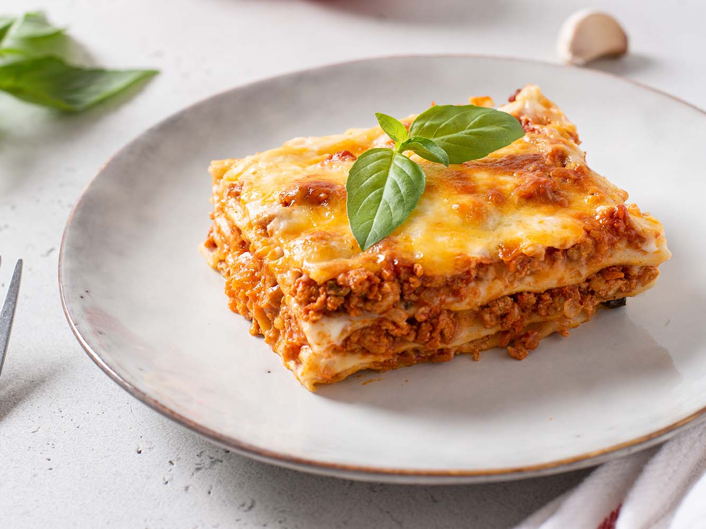

Lasagna Recipe
Ingredients
- Ground meat - 600 g
- Bolognese sauce - 600 g
- Butter - 60 g
- Wheat flour - 2½ tablespoons
- Olive oil - 2 tablespoons
- Milk - 750 ml
- Ready-made dry lasagna sheets - 10 pieces
- Hard cheese - 500 g
Method:
- In a saucepan, combine butter and 2 tablespoons of olive oil; melt over medium heat. Gradually add flour, stirring continuously to prevent lumps.
- Once all the flour is incorporated, gradually pour in the milk. Reduce heat and simmer until the sauce reaches the consistency of low-fat sour cream; it should be thick but not solid. Continuously stir the sauce to prevent it from burning.
- In a frying pan, heat some olive oil. Add the ground meat (a mix of pork and veal is preferred).
- Fry the ground meat until it is half cooked, then stir in the Bolognese sauce. Season with salt and pepper to taste.
- Preheat the oven to 180°C (356°F). Grease a baking dish with butter. Spread a thin layer of béchamel sauce over the bottom to just cover it.
- Layer the uncooked lasagna sheets. Top with the cooked meat, a generous amount of grated cheese, and cover with béchamel sauce.
- Continue layering as desired to ensure the lasagna is moist and juicy. Finish with a layer of dry lasagna sheets.
- Top the final layer of lasagna sheets with béchamel sauce and a generous amount of cheese. Let it rest for 7-10 minutes before baking. Bake in the preheated oven for 30 minutes.